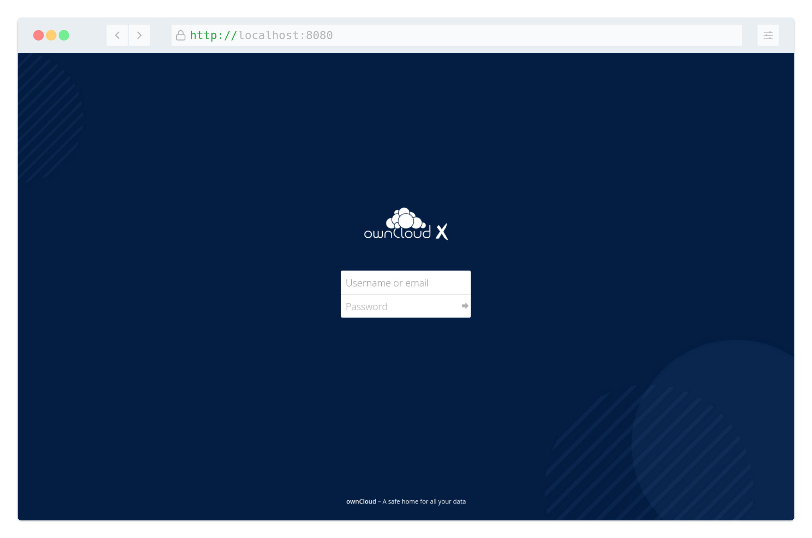

Installing with Docker
Introduction
ownCloud can be installed using the official ownCloud Docker image. This official image works standalone for a quick evaluation but is designed to be used in a docker compose setup.
Database Notes
With the image provided, ownCloud has added database connectors for the following databases:
-
MySQL / MariaDB
-
Postgres
-
SQLite
If you need a different connector or a different version of a connector, you have to manually create your own image based on the ownCloud image provided here. This could also be done directly in the docker compose file.
Getting Started
Grant docker command privileges to certain users by adding them to the group docker:
sudo usermod -aG docker <your-user>
The changes via usermod only take effect after the docker users log in. So you may have to log out and log in again or possibly reboot before you can run docker commands.
|
Users not added to the docker group can run docker commands with a preceding sudo. In this section sudo is generally omitted before docker commands since we assume you have created a docker user, which is also the only way to run ownCloud’s command-line interface occ in a docker container. For more information on occ, see section Using the occ Command.
An example occ command looks like this:
docker exec --user www-data <owncloud-container-name> occ <your-command>Quick Evaluation
| The commands and links provided in the following descriptions are intended to showcase basic docker usage, but we cannot take responsibility for their proper functioning. |
For testing purposes or a quick hands-on to get familiar with the look and feel, ownCloud provides a container using the SQLite database. Note that SQLite is not supported by ownCloud for production purposes. To set up such a testing instance, run the following command:
docker run --rm --name oc-eval -d -p8080:8080 owncloud/serverThis starts a docker container with the name "oc-eval" in the background (option -d). owncloud/server is the docker image downloaded from Docker Hub. If you don’t start the container with option -d, the logs will be displayed in the shell. If you are running it in the background as in the example above, you can display the logs with the command:
docker logs oc-evalWith the command docker ps you can list your running docker containers and should see the entry for oc-eval.
You can log in to your ownCloud instance via a browser at http://localhost:8080 with the preconfigured user admin and password admin.
| Access only works locally with http, not https. |
If the outcome meets the expectations but a supported installation with MariaDB is targeted, remove the eval version before proceeding with the next section.
docker kill oc-evalThis removes the container if you used the option --rm as suggested in the example above. If you omitted that option, you need to first run the command:
docker rm oc-evalWhen running docker ps again, the entry for oc-eval should be gone.
Docker Compose
The configuration:
-
Exposes ports 8080, allowing for HTTP connections.
-
Uses separate MariaDB and Redis containers.
-
Mounts the data and MySQL data directories on the host for persistent storage.
The following instructions assume you install locally. For remote access, the value of OWNCLOUD_DOMAIN and OWNCLOUD_TRUSTED_DOMAINS must be updated to represent the hostname(s) and/or IP addresses that the server is reachable at.
-
Create a new project directory.
mkdir owncloud-docker-server cd owncloud-docker-server -
Then copy and paste the sample
docker-compose.ymlas base to derive from:version: "3" volumes: files: driver: local mysql: driver: local redis: driver: local services: owncloud: image: owncloud/server:${OWNCLOUD_VERSION} container_name: owncloud_server restart: always ports: - ${HTTP_PORT}:8080 depends_on: - mariadb - redis environment: - OWNCLOUD_DOMAIN=${OWNCLOUD_DOMAIN} - OWNCLOUD_TRUSTED_DOMAINS=${OWNCLOUD_TRUSTED_DOMAINS} - OWNCLOUD_DB_TYPE=mysql - OWNCLOUD_DB_NAME=owncloud - OWNCLOUD_DB_USERNAME=owncloud - OWNCLOUD_DB_PASSWORD=owncloud - OWNCLOUD_DB_HOST=mariadb - OWNCLOUD_ADMIN_USERNAME=${ADMIN_USERNAME} - OWNCLOUD_ADMIN_PASSWORD=${ADMIN_PASSWORD} - OWNCLOUD_MYSQL_UTF8MB4=true - OWNCLOUD_REDIS_ENABLED=true - OWNCLOUD_REDIS_HOST=redis healthcheck: test: ["CMD", "/usr/bin/healthcheck"] interval: 30s timeout: 10s retries: 5 volumes: - files:/mnt/data mariadb: image: mariadb:10.11 # minimum required ownCloud version is 10.9 container_name: owncloud_mariadb restart: always environment: - MYSQL_ROOT_PASSWORD=owncloud - MYSQL_USER=owncloud - MYSQL_PASSWORD=owncloud - MYSQL_DATABASE=owncloud - MARIADB_AUTO_UPGRADE=1 command: ["--max-allowed-packet=128M", "--innodb-log-file-size=64M"] healthcheck: test: ["CMD", "mysqladmin", "ping", "-u", "root", "--password=owncloud"] interval: 10s timeout: 5s retries: 5 volumes: - mysql:/var/lib/mysql redis: image: redis:6 container_name: owncloud_redis restart: always command: ["--databases", "1"] healthcheck: test: ["CMD", "redis-cli", "ping"] interval: 10s timeout: 5s retries: 5 volumes: - redis:/data -
Create a
.envconfiguration file, which contains the required configuration settings.cat << EOF > .env OWNCLOUD_VERSION=10.16 OWNCLOUD_DOMAIN=localhost:8080 OWNCLOUD_TRUSTED_DOMAINS=localhost ADMIN_USERNAME=admin ADMIN_PASSWORD=admin HTTP_PORT=8080 EOFOnly a few settings are required, these are:
Setting Name Description Example OWNCLOUD_VERSIONThe ownCloud version
latestOWNCLOUD_DOMAINThe ownCloud domain
localhost:8080OWNCLOUD_TRUSTED_DOMAINSThe ownCloud trusted domains
localhostADMIN_USERNAMEThe admin username
adminADMIN_PASSWORDThe admin user’s password
adminHTTP_PORTThe HTTP port to bind to
8080ADMIN_USERNAMEandADMIN_PASSWORDwill not change between deploys even if you change the values in the .env file. To change them, you’ll need to dodocker volume prune, which will delete all your data. -
Then, you can build and start the container, using your preferred Docker command-line tool.
The example below shows how to use Docker Compose.
docker compose up -d -
When the process completes:
Check that all the containers have successfully started, by running
docker compose ps. If they are all working correctly, you should see output similar to the one below:Name Command State Ports owncloud_mariadb
docker-entrypoint.sh --max …
Up (healthy)
3306/tcp
owncloud_redis
docker-entrypoint.sh --dat …
Up (healthy)
6379/tcp
owncloud_server
/usr/bin/entrypoint /usr/b …
Up (healthy)
0.0.0.0:8080→8080/tcp
In it, you can see that the database, ownCloud and Redis containers are running, and that ownCloud is accessible via port 8080 on the host machine.
All files stored in this setup are contained in Docker volumes rather than a physical filesystem tree. It is the admin’s responsibility to make the files persistent.
To inspect the volumes run:
docker volume ls | grep filesThe volume name depends on the project name which builds the first part of the volume and the name of the volume in the docker file. The naming pattern of the volume is
<COMPOSE_PROJECT_NAME>_<VOLUME_NAME>. An environment variable forCOMPOSE_PROJECT_NAMEcan be set and also be defined in a.envfile. If not specified, the directory in which docker compose is executed will be used as a name.To export the files of the project "owncloud-docker-server" as a tar archive run:
docker run -v <YOUR_DOCKER_VOLUME>:/mnt \ ubuntu tar cf - -C /mnt . > files.tarAlthough the containers are up and running, it may still take a few minutes until ownCloud is fully functional.
To inspect the log output:docker compose logs --follow owncloudWait until the output shows Starting apache daemon… before you access the web UI.
Although all important data persists after:
docker compose down; docker compose up -dthere are certain details that get lost, e.g., default apps may re-appear after they were uninstalled.
Logging In
To log in to the ownCloud UI, open http://localhost:8080 in your browser
of choice, where you see the standard ownCloud login screen as in the
image below.

The username and password are the credentials which you stored in .env earlier.
Note that these will not change between deploys even if you change the values in .env.
Stopping the Containers
Again we assume you used docker compose like in the previous example.
To stop the containers use:
docker compose stopTo stop and remove containers along with the related networks, images and volumes:
docker compose down --rmi all --volumesRunning occ commands
If you want to run an occ command, first go to the directory where your .yaml or .env file is located.
Here, you are able to run any command referring to
Using the occ Command by entering:
docker compose exec owncloud occ <command>|
Don’t use the |
Upgrading ownCloud on Docker
When a new version of ownCloud gets released, you should update your instance. To do so, follow these simple steps:
-
Go to your docker directory where your
.yamland.envfiles exist. -
Put ownCloud into maintenance mode with the following command:
docker compose exec owncloud occ maintenance:mode --on -
Create a backup of the database in case something goes wrong during the upgrade process, using the following command:
docker compose exec mariadb \ /usr/bin/mysqldump \ -u root \ --password=owncloud \ --single-transaction \ owncloud > owncloud_$(date +%Y%m%d).sqlYou need to adjust the password and database name if you have changed it in your deployment. -
Shutdown the containers:
docker compose down -
Update the version number of ownCloud in your
.envfile. You can use sed for it, as in the following example.Make sure that you adjust the example to match your installation.
sed -i 's/^OWNCLOUD_VERSION=.*$/OWNCLOUD_VERSION=<newVersion>/' .env -
View the file to ensure the change has been implemented.
cat .env -
Start your docker instance again.
docker compose up -dNow you should have the current ownCloud running with
docker compose. Note that the container will automatically runocc upgradewhen starting up. If you notice the container starting over and over again, you can check the update log with the following command:docker compose logs --timestamp owncloud -
If all went well, end maintenance mode:
docker compose exec owncloud occ maintenance:mode --off
Docker Compose YAML File
The file docker-compose.yml contains the configuration of your ownCloud container.
|
Since ownCloud Server 10.5, the dedicated enterprise docker image |
version: "3"
volumes:
files:
driver: local
mysql:
driver: local
redis:
driver: local
services:
owncloud:
image: owncloud/server:${OWNCLOUD_VERSION}
container_name: owncloud_server
restart: always
ports:
- ${HTTP_PORT}:8080
depends_on:
- mariadb
- redis
environment:
- OWNCLOUD_DOMAIN=${OWNCLOUD_DOMAIN}
- OWNCLOUD_TRUSTED_DOMAINS=${OWNCLOUD_TRUSTED_DOMAINS}
- OWNCLOUD_DB_TYPE=mysql
- OWNCLOUD_DB_NAME=owncloud
- OWNCLOUD_DB_USERNAME=owncloud
- OWNCLOUD_DB_PASSWORD=owncloud
- OWNCLOUD_DB_HOST=mariadb
- OWNCLOUD_ADMIN_USERNAME=${ADMIN_USERNAME}
- OWNCLOUD_ADMIN_PASSWORD=${ADMIN_PASSWORD}
- OWNCLOUD_MYSQL_UTF8MB4=true
- OWNCLOUD_REDIS_ENABLED=true
- OWNCLOUD_REDIS_HOST=redis
healthcheck:
test: ["CMD", "/usr/bin/healthcheck"]
interval: 30s
timeout: 10s
retries: 5
volumes:
- files:/mnt/data
mariadb:
image: mariadb:10.11 # minimum required ownCloud version is 10.9
container_name: owncloud_mariadb
restart: always
environment:
- MYSQL_ROOT_PASSWORD=owncloud
- MYSQL_USER=owncloud
- MYSQL_PASSWORD=owncloud
- MYSQL_DATABASE=owncloud
- MARIADB_AUTO_UPGRADE=1
command: ["--max-allowed-packet=128M", "--innodb-log-file-size=64M"]
healthcheck:
test: ["CMD", "mysqladmin", "ping", "-u", "root", "--password=owncloud"]
interval: 10s
timeout: 5s
retries: 5
volumes:
- mysql:/var/lib/mysql
redis:
image: redis:6
container_name: owncloud_redis
restart: always
command: ["--databases", "1"]
healthcheck:
test: ["CMD", "redis-cli", "ping"]
interval: 10s
timeout: 5s
retries: 5
volumes:
- redis:/dataTroubleshooting
Admin Settings
When running under docker, the admin user cannot control certain settings in the WebUI, instead they are now controlled by environment variables. Changing these variables requires stopping and restarting the container with extra docker -e … parameters or with new entries in the .env file for docker compose.
Raspberry Pi
If your container fails to start on Raspberry Pi or other ARM devices, you most likely have an old version of libseccomp2 on your host. This should only affect distros based on Rasbian Buster 32 bit. Install a newer version with the following command:
cd /tmp
wget http://ftp.us.debian.org/debian/pool/main/libs/libseccomp/libseccomp2_2.5.1-1_armhf.deb
sudo dpkg -i libseccomp2_2.5.1-1_armhf.debAlternatively you can add the backports repo for Debian Buster:
sudo apt-key adv --keyserver keyserver.ubuntu.com \
--recv-keys 04EE7237B7D453EC 648ACFD622F3D138
echo "deb http://deb.debian.org/debian buster-backports main" | \
sudo tee -a /etc/apt/sources.list.d/buster-backports.list
sudo apt update
sudo apt install -t buster-backports libseccomp2In any case, you should restart the container after confirming you have libseccomp2.4.4 installed.
For more information see: Linux Server Docs
Terminating containers
If your container is terminating for whatever reason, you will not be able to run docker(-compose) exec to make investigations inside the container as there will be no running container. Instead you need to use docker(-compose) run. It’s important that you prefix any command to be run by /usr/bin/owncloud, otherwise the container will not be initialized correctly. See the example command below:
docker( compose) run <containername> /usr/bin/owncloud bash